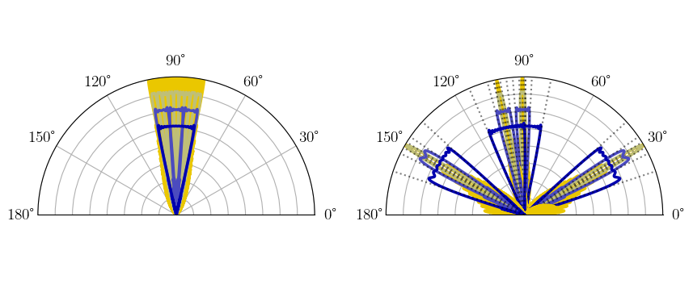

mlcomm.codebooks
Features codebook construction for both Binary Hierarchical codebook, shown in Figure below,
In addition, we feature construction of a Trinary Hierarhical codebook in which each narrow beam has a corresponding broad beam steered in the same direction. Conversely, the broader beams split into three non-overlapping beams as well. Example shown below.
Adaptive Communication Decision and Information Systems (ACDIS) - User License https://bloch.ece.gatech.edu/researchgroup/
Copyright (c) 2024-2025 Georgia Institute of Technology
Permission is hereby granted, free of charge, to any person obtaining a copy of this software and associated documentation files (the “Software”), to deal in the Software without restriction, including without limitation the rights to use, copy, modify, merge, publish, distribute, sublicense, and/or sell copies of the Software, and to permit persons to whom the Software is furnished to do so, subject to the following conditions:
The above copyright notice and this permission notice shall be included in all copies or substantial portions of the Software. Users shall cite ACDIS publications regarding this work.
THE SOFTWARE IS PROVIDED “AS IS”, WITHOUT WARRANTY OF ANY KIND, EXPRESS OR IMPLIED, INCLUDING BUT NOT LIMITED TO THE WARRANTIES OF MERCHANTABILITY, FITNESS FOR A PARTICULAR PURPOSE AND NONINFRINGEMENT. IN NO EVENT SHALL THE AUTHORS OR COPYRIGHT HOLDERS BE LIABLE FOR ANY CLAIM, DAMAGES OR OTHER LIABILITY, WHETHER INANACTION OF CONTRACT TORT OR OTHERWISE, ARISING FROM, OUT OF OR IN CONNECTION WITH THE SOFTWARE OR THE USE OR OTHER DEALINGS IN THE SOFTWARE.
- class mlcomm.codebooks.BinaryHierarchicalCodebook(params)
Description
Organizes the master codebook using a binary tree graph. Each node corresponds to a beamforming vector, and has a master index (midx).
Along with the master index, each level has an index ‘h’ along with a left-to-right index ‘i’ from 0 to 2**(h + 1)-1, for instance, node 3 has (h,i) = (1,1), and node 11 has (h,i) = (3,5).
Each node is a ‘Node’ class which holds various attributes along with indices.
The beamforming vectors of the codebook are calculated based on the min and max angles specified in the params dict (described in Parameters). The sets of phase shifts are designed to be applied to a Uniform Linear Array (ULA) along the x-axis. The main beam of the beamforming patterns that correspond to the beamforming vectors are non-overlapping and evenly spaced to cover the specfied swath.
Construction originally from [1] and [2]
[1] A. Alkhateeb, O. El Ayach, G. Leus and R. W. Heath, “Channel Estimation and Hybrid Precoding for Millimeter Wave Cellular Systems,” in IEEE Journal of Selected Topics in Signal Processing, vol. 8, no. 5, pp. 831-846, Oct. 2014, doi: 10.1109/JSTSP.2014.2334278. [2] O. E. Ayach, S. Rajagopal, S. Abu-Surra, Z. Pi and R. W. Heath, “Spatially Sparse Precoding in Millimeter Wave MIMO Systems,” in IEEE Transactions on Wireless Communications, vol. 13, no. 3, pp. 1499-1513, March 2014, doi: 10.1109/TWC.2014.011714.130846.
Attributes
- Hint
Number of levels in the hierarchical codebook.
- Mint
Number of physical antenna elements.
- Bint
Number of RF chains, the number of analog-to-digital or digital-to-analog converters.
- Sint
Number of data streams to support simultaneous users.
- beamwidthsnumpy ndarray of floats
beamwidth indicating the coverage area for beams, the h element is the h level’s beamwidth.
- steered_angleslist of numpy ndarray of floats
The h element in the list is a numpy ndarray of length 2^(h+1) with elements indicating the steered beam direction for beam (h,i).
- nodeslist of Node type class
Each element of the list is an instance of Node class for a particular beamforming vector.
- level_midxslist of lists
Each element in the list is a list of ints, the h list is the master indices at level h.
- base_midxs: list of lists
equivalent to level_midxs for this class.
- gfloat
gain value of the codebook
- NHint
Total number of beamforming vectors considered in all MAB games along one path.
Notes
Additional attributes are passed to each instance of class Node in nodes.
Recommend set ‘depth’ = np.ceil(np.log2(num_elements)) or set ‘num_elements’ <= 2**depth.
Quality of beamforming vector patterns degrades with fewer RF chains, set by num_rf_chains.
Example Use
For use in Multi-Armed Bandit algorithms in which each beam represents an arm of a bandit, one may assign bandit statistics to each Node class object with mean rewards, number of times pulled, empirical mean, etc.
Codebook featured in works such as - Chiu, Sung-En, Nancy Ronquillo, and Tara Javidi. “Active learning and CSI acquisition for mmWave initial alignment.” IEEE Journal on Selected Areas in Communications 37.11 (2019): 2474-2489. - Blinn, Nathan, Jana Boerger, and Matthieu Bloch. “mmWave Beam Steering with Hierarchical Optimal Sampling for Unimodal Bandits.” ICC 2021-IEEE International Conference on Communications. IEEE, 2021.
- get_midx(h, i)
- class mlcomm.codebooks.Node(params)
A class to represent a node in a hierarchical structure.
Attributes
- midxint
The master index of the node.
- hint
The hierarchical level of the node.
- iint
The index of the node at its level.
- indicestuple
A tuple containing the hierarchical level and index of the node.
- steered_anglefloat
The steered angle of the node.
- cvg_region_startfloat
The start of the coverage region for the node.
- cvg_region_stopfloat
The stop of the coverage region for the node.
- beamwidthfloat
The beamwidth of the node, calculated as the absolute difference between the coverage region start and stop.
- zoom_out_midxint
Provided by initializing codebook class object. For the TernaryPointedHierarchicalCodebook, this is a master index of a beamforming vector with the same steering angle at level h-1. This is the parent node in a BinaryHierarchicalCodebook
- zoom_in_midxslist of ints
Provided by initializing codebook class object. Master indices of narrower beamforming vectors at h+1 that the Node aggregates. They are non-overlapping.
Methods
Defaults to bandit statistics terms that are used in DBZ, may be replaced with custom attributes using
typespackage as follows. For an instance ofNode,node,from types import MethodType node.exploration = types.MethodType(exploration,node)
- confidence_term(nn)
- exploration(nn)
- lcb(nn)
- ucb(nn)
- class mlcomm.codebooks.TernaryPointedHierarchicalCodebook(params)
Description
Each node is a ‘Node’ class which holds various attributes along with indices
The beamforming vectors of the codebook are calculated based on the min and max angles specified in the params dict (described in Parameters). The sets of phase shifts are designed to be applied to a Uniform Linear Array (ULA) along the x-axis. The main beam of the beamforming patterns that correspond to the beamforming vectors are non-overlapping and evenly spaced to cover the specfied swath.
Construction originally from [1] and [2]
[1] A. Alkhateeb, O. El Ayach, G. Leus and R. W. Heath, “Channel Estimation and Hybrid Precoding for Millimeter Wave Cellular Systems,” in IEEE Journal of Selected Topics in Signal Processing, vol. 8, no. 5, pp. 831-846, Oct. 2014, doi: 10.1109/JSTSP.2014.2334278. [2] O. E. Ayach, S. Rajagopal, S. Abu-Surra, Z. Pi and R. W. Heath, “Spatially Sparse Precoding in Millimeter Wave MIMO Systems,” in IEEE Transactions on Wireless Communications, vol. 13, no. 3, pp. 1499-1513, March 2014, doi: 10.1109/TWC.2014.011714.130846.
Attributes
- num_h0int
Number of initial beamforming vectors in the top-level base set.
- Hint
Number of levels in the hierarchical codebook.
- Mint
Number of physical antenna elements.
- Bint
Number of RF chains, the number of analog-to-digital or digital-to-analog converters.
- Sint
Number of data streams to support simultaneous users.
- beamwidthsnumpy ndarray of floats
beamwidth indicating the coverage area for beams, the h element is the h level’s beamwidth.
- steered_angleslist of numpy ndarray of floats
The h element in the list is a numpy ndarray of length 2^(h+1) with elements indicating the steered beam direction for beam (h,i).
- nodeslist of Node type class
Each element of the list is an instance of Node class for a particular beamforming vector.
- level_midxslist of lists
Each element in the list is a list of ints, the h list is the master indices at level h.
- base_midxs: list of lists
the set of size self.num_h0 which minimally covers the range of angles with the broadest beamforming patterns.
- gfloat
gain value of the codebook
- NHint
Total number of beamforming vectors considered in all MAB games along one path.
Notes
Additional attributes are passed to each instance of class Node in nodes.
Recommend set ‘depth’ = np.ceil(np.log2(num_elements)) or set ‘num_elements’ <= 2**depth.
Quality of beamforming vector patterns degrades with fewer RF chains, set by num_rf_chains.
Example Use
For use in Multi-Armed Bandit algorithms in which each beam represents an arm of a bandit, one may assign bandit statistics to each Node class object with mean rewards, number of times pulled, empirical mean, etc.
- get_midx(h, i)
- mlcomm.codebooks.build_hybrid_vector(F_opt, A_can, num_rf_chains, num_data_streams=1)
Description
Build hybrid analog-digital beamforming vector for optimal set of weights contained in vector F_opt. The final hybrid beamforming vector is expressed as the matrix product, F = F_bb@F_rf. If the number of RF chains is equal to the number of elements, F is equivalent to F_opt.
There is an extra set of lines of code that ensures that different columns of the candidate vectors matrix are selected as to not make the resulting codeword matrix singular.
Parameters
- F_optnumpy-ndarray of complex float
array of complex floats of length M, corresponding to M number of elements for the ideal beamforming vector.
- A_cannumpy-ndarray of complex float
matrix whose columns are the possible beamforming vectors which may be aggregated to form new ones. In most cases, this is just the set of narrowest beamforming vectors.
- num_rf_chainsint
number of analog-to-digital or digital-to-analog converters in receiver or transmitter architecture. Many applications assume a 1-to-1 ratio of possible simultaneous users to the number of RF chains, hence we fix the number of number of data streams to 1 (next parameter).
- num_data_streamsint
number of data streams (simultaneous users) of the channel.
Returns
- F_bbnumpy-ndarray of complex float
Matrix of complex floats of dimension num_data_streams X num_rf_chains which is the baseband precoding (decoding) digital matrix.
- F_rfnumpy-ndarray of complex float
Matrix of complex floats of dimension num_rf_chains X M (number of elements) which is the RF analog beamforming set of weights.
- Fnumpy-ndarray of complex float
Hybrid beamforming vector, which is the product of F_bb@F_rf
- mlcomm.codebooks.load_codebook(filename, loadpath)
Description
Load cb_graph for use.
Parameters
- filenamestring
Name of save pickle file.
- loadpathstring, optional
The default is ‘./’.
Returns
- cb_graphobject
Type instance of BinaryHierarchicalCodebook or TernaryPointedHierarchicalCodebook. See description of class types.
- mlcomm.codebooks.quantize(X, M, Nq=3)
Description
Quantizes with respect to nearest complex numbered value. Relevant to coarse analog phase shifters that may have finite granularity to phase values.
Parameters
- Xnumpy ndarray
matrix of complex floats which we loop through and quantize each element.
- Mint
Number of antenna elements in array, important due to element normalization. Not used in codebook constructions.
- Nqint
Number of quantization levels, i.e. 2**Nq.
Returns
- Xqnumpy ndarray
quantized matrix of complex floats which we looped through and quantized each element.
- mlcomm.codebooks.save_codebook(cb_graph, filename, savepath='./')
Description
Save cb_graph for later use. Often faster than intial creation.
Parameters
- cb_graphobject
Type instance of BinaryHierarchicalCodebook or TernaryPointedHierarchicalCodebook. See description of class types.
- filenamestring
Name of save pickle file.
- savepathstring, optional
The default is ‘./’.
Returns
None.